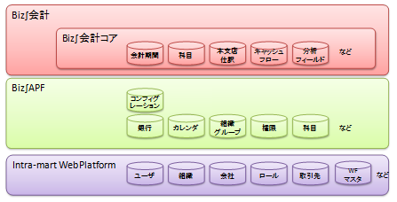

はじめに¶
導入手順全体構成と他ドキュメントとの関係¶
各モジュールの導入にて必要な作業手順は導入マトリクス表をご覧ください。
コラム
「△」が設定された作業はBiz∫会計のシステムを使用する上で必須とはなりませんので各導入ページを確認し、必要に応じた設定を行って下さい。
複数のモジュールを導入する場合、各モジュールで「○」または「△」が設定された作業手順を全て実施する必要があります。
なお、Biz∫会計はBiz∫の共通フレームワークであるBiz∫APF、その動作基盤であるintra-martの上で動作するため、マスタデータの設定は低層のintra-martレイヤ、続いてBiz∫APFレイヤ、最後にBiz∫会計レイヤの順に行う必要があり、本書も基本的にこの順に従った構成となっています。
Biz∫会計の主要マスタデータ配置


本書の構成¶
本書は、単独の会社にBiz∫会計の運用環境を新規に構築する場合の手順を解説しています。また、Biz∫会計はモジュール単位で選択的に導入できるという特性を持っています。このため、以降の章ではモジュールの導入順序の関係を踏まえ、導入手順を解説しています。それぞれの章の概要を以下に示します。
導入プロジェクトの状況に応じて、参照する章をご選択ください。
-
Biz∫の導入前に検討・準備するべき内容を解説しています。
-
Biz∫の共通基盤である、Biz∫APFまでの導入手順を解説しています。
-
Biz∫会計の各モジュールの共通基盤である、Biz∫会計コアの設定手順を解説しています。
-
Biz∫会計で利用可能なワークフローの導入手順を解説しています。
-
各モジュール別の導入手順を解説しています。
-
Biz∫会計の一般会計の残高の移行手順を解説しています。
-
Biz∫会計の残高移行のうち、債権債務モジュールを導入している場合の手順を解説しています。
-
Biz∫会計の仕訳明細の移行手順を解説しています。
注意
Biz∫会計を期首から導入することを想定して記載しております。
Biz∫会計管理者について¶
導入する際、Biz∫会計のログインユーザは運用環境セットアップガイドで作成した「Biz∫会計管理者アカウント」を使用します。本ユーザは、認可設定の手順で、Biz∫APFの権限グループ管理を使用できる認可設定を行って下さい。アクセス権設定 では、本ユーザに対し、導入に必要な権限を付与してください。
一括取込用のシートについて¶
本導入マニュアルでは、マスタ設定等のために一括取込用のシートを利用する手順が記載されています。
コラム
各種マスタ設定等のために一括取込用のシートについては、一括取込マニュアルを参照してください。